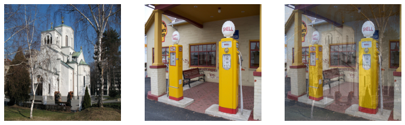

dblock = DataBlock(blocks=(# TransformBlock for images ImageBlock(), # TransformBlock for single-label categorical target CategoryBlock()),# recursively load image files from path get_items=get_image_files,# label images using the parent folder name get_y=parent_label,# presize images to 460px item_tfms=Resize(460),# Batch resize to 224 and perform data augmentations batch_tfms=aug_transforms(size=224, min_scale=0.75))dls = dblock.dataloaders(path, bs=64, num_workers=8)
Same as nn.CrossEntropyLoss, but flattens input and target.
CrossEntropyLossFlat
fastai.losses.CrossEntropyLossFlat
# Initialize the model without pretrained weightsmodel = xresnet50(n_out=dls.c)learn = Learner(dls, model, loss_func=CrossEntropyLossFlat(), metrics=accuracy)learn.fit_one_cycle(5, 3e-3)
epoch
train_loss
valid_loss
accuracy
time
0
1.672769
3.459394
0.301718
00:59
1
1.224001
1.404229
0.552651
01:00
2
0.968035
0.996460
0.660941
01:00
3
0.699550
0.709341
0.771471
01:00
4
0.578120
0.571692
0.820388
01:00
# Initialize the model without pretrained weightsmodel = xresnet50(n_out=dls.c)# Use mixed precisionlearn = Learner(dls, model, loss_func=CrossEntropyLossFlat(), metrics=accuracy).to_fp16()learn.fit_one_cycle(5, 3e-3)
epoch
train_loss
valid_loss
accuracy
time
0
1.569645
3.962554
0.329724
00:33
1
1.239950
2.608771
0.355489
00:33
2
0.964794
0.982138
0.688200
00:34
3
0.721289
0.681677
0.791636
00:33
4
0.606473
0.581621
0.824122
00:33
Normalization
normalized data: has a mean value of 0 and a standard deviation of 1
it is easier to train models with normalized data
normalization is especially important when using pretrained models
make sure to use the same normalization stats the pretrained model was trained on
during inference or validation, creating multiple versions of each image using augmentation, and then taking the average or maximum of the predictions for each augmented version of the image
can result in dramatic improvements in accuracy, depending on the dataset
does not change the time required to train
will increase the amount of time required for validation or inference
a powerful data augmentation technique that can provide dramatically higher accuracy, especially when you don’t have much data and don’t have a pretrained model
“While data augmentation consistently leads to improved generalization, the procedure is dataset-dependent, and thus requires the use of expert knowledge
Mixup steps
Select another image from your dataset at random
Pick a weight at random
Take a weighted average of the selected image with your image, to serve as your independent variable
Take a weighted average of this image’s labels with your image’s labels, to server as your dependent variable
target needs to be one-hot encoded
\(\tilde{x} = \lambda x_{i} + (1 - \lambda) x_{j} \text{, where } x_{i} \text{ and } x_{j} \text{ are raw input vectors}\)
\(\tilde{y} = \lambda y_{i} + (1 - \lambda) y_{j} \text{, where } y_{i} \text{ and } y_{j} \text{ are one-hot label encodings}\)
more difficult to train
less prone to overfitting
requires far more epochs to to train to get better accuracy
can be applied to types of data other than photos
can even be used on activations inside of model
resolves the issue where it is not typically possible to achieve a perfect loss score
our labels are 1s and 0s, but the outputs of softmax and sigmoid can never equal 1 or 0
with Mixup our labels will only be exactly 1 or 0 if two images from the same class are mixed
Mixup is “accidentally” making the labels bigger than 0 or smaller than 1
can be resolved with Label Smoothing
# Get two images from different classeschurch = PILImage.create(get_image_files_sorted(path/'train'/'n03028079')[0])gas = PILImage.create(get_image_files_sorted(path/'train'/'n03425413')[0])# Resize imageschurch = church.resize((256,256))gas = gas.resize((256,256))# Scale pixel values to the range [0,1]tchurch = tensor(church).float() /255.tgas = tensor(gas).float() /255._,axs = plt.subplots(1, 3, figsize=(12,4))# Show the first imageshow_image(tchurch, ax=axs[0]);# Show the second imageshow_image(tgas, ax=axs[1]);# Take the weighted average of the two imagesshow_image((0.3*tchurch +0.7*tgas), ax=axs[2]);

model = xresnet50()learn = Learner(dls, model, loss_func=CrossEntropyLossFlat(), metrics=accuracy, cbs=MixUp).to_fp16()learn.fit_one_cycle(15, 3e-3)